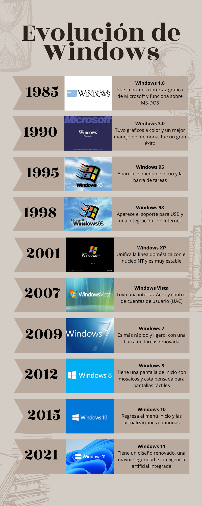
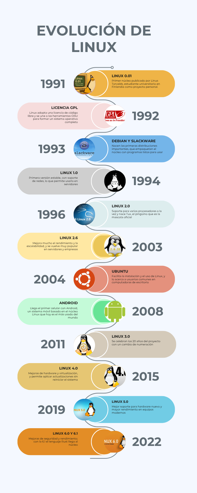

Evolución de los sistemas operativos: Windows y Linux
Sistema y operativo: qué significa cada palabra
Para entender qué es un sistema operativo conviene separar las dos palabras. Un sistema es un conjunto de elementos relacionados entre sí que trabajan juntos con un fin determinado.
La palabra operativo indica que su fin es la operación o conducción del hardware, es decir, controlar y coordinar los componentes físicos de la computadora para que puedan utilizarse. Por eso, un sistema operativo es el conjunto de elementos relacionados cuyo fin es operar y conducir el hardware.
Desde Windows 1.0 hasta Windows 11

Desde el primer núcleo de Linus Torvalds hasta las versiones más recientes.

| Windows | Linux | |
|---|---|---|
| Creador | Microsoft | Linus Torvalds y una comunidad mundial |
| Primera versión | 1985 | 1991 |
| Licencia | Propietaria | Libre (GPL) |
| Uso común | Computadoras personales | Servidores, nube, supercomputadoras y Android |